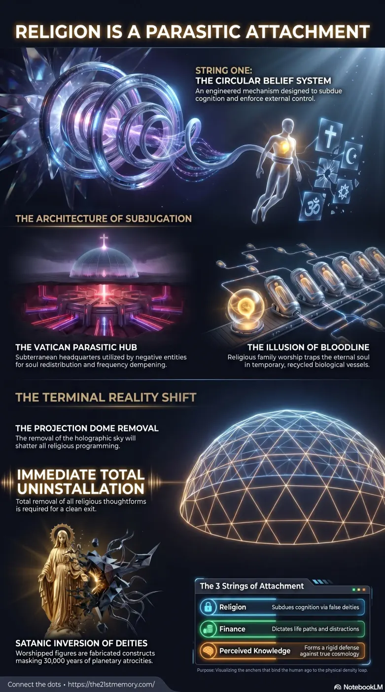

Severing the religious string of attachment
Core revelations about religion (false gods).
String 1: Religion is one of the three primary psychological tethers, collectively known as The 3 Strings of Attachment, that must be entirely severed to achieve a clean exit during the Great…
Test your grasp of Religion (False Gods) — String 1, circular belief, Vatican infrastructure, satanic inversion, and total uninstallation for a clean exit.

Core revelations about religion (false gods).
Practical breakdown of religion (false gods).
String 1: Religion is one of the three primary psychological tethers, collectively known as The 3 Strings of Attachment, that must be entirely severed to achieve a clean exit during the Great Spiritual Awakening. Religion is engineered as a circular belief system designed to subdue human cognition and enforce control through the worship of False Gods. To survive the impending uninstallation of the current planetary simulation, an individual must completely eradicate all religious beliefs, thoughtforms, and concepts of deities. Clinging to religious devotion guarantees profound psychological collapse, fatal shock, or suicide when the terminal planetary events reveal the true, satanic nature of the realm's worshipped figures.
The foundational truth regarding Religion is that all worshipped deities are entirely fabricated constructs designed for control. Believing in false gods is explicitly categorized as String 1 of the 3 Strings of Attachment. The devoutly religious face severe psychological peril; when confronted with the reality that their belief systems were lies manufactured to mask planetary-scale child sacrifice, the shock will induce fatal heart attacks or drive them to suicide.
The concept of a benevolent deity is fundamentally incompatible with the reality of the realm's history. The upcoming EBS will force humanity to confront how a supposedly loving "God" could permit the torture, rape, and sacrifice of billions of children over 30,000 years. This revelation will cause religious individuals to mentally collapse or evaporate into the aether as pixelation dust, as they will have no defense mechanism to process the deception.
Religion must be viewed alongside the other two Strings of Attachment: Finance and Perceived Knowledge. Together, these three constructs form an almost impenetrable shield around the human ego, trapping it within the physical density loop. Just as Finance distracts the population by dictating life paths and Perceived Knowledge forms a rigid intellectual defense against true cosmology (such as the flat, unmoving Earth), Religion pacifies the soul into accepting continuous suffering and external salvation.
When the planetary EMF (Electro Magnetic Frequency) event strikes and the holographic Projection Dome obscuring the true sky is removed, the visible reality will shatter all three strings simultaneously. Those heavily bound by religious programming will possess no mental pigeon-hole to allocate this display of cosmic reality. Their attachment to an invisible savior will violently clash with the undeniable visual evidence of the simulation breaking down, ensuring they join the 97% of the NPC (Non-Player Character) population who will be eliminated from the physical plane.
The strategic imperative for any individual attempting to ascend is the immediate and total uninstallation of all religious beliefs. One must press "pause" on all devotion to external deities, completely severing String 1. Maintaining even a fractional belief that a god might be real guarantees psychological destruction during the terminal phases of the awakening. By dismantling the mental constructs of Religion, an individual strips away the false comfort of the matrix, allowing their consciousness to survive the extreme trauma of the imminent Scare Events and secure a clean exit from the current physical simulation.